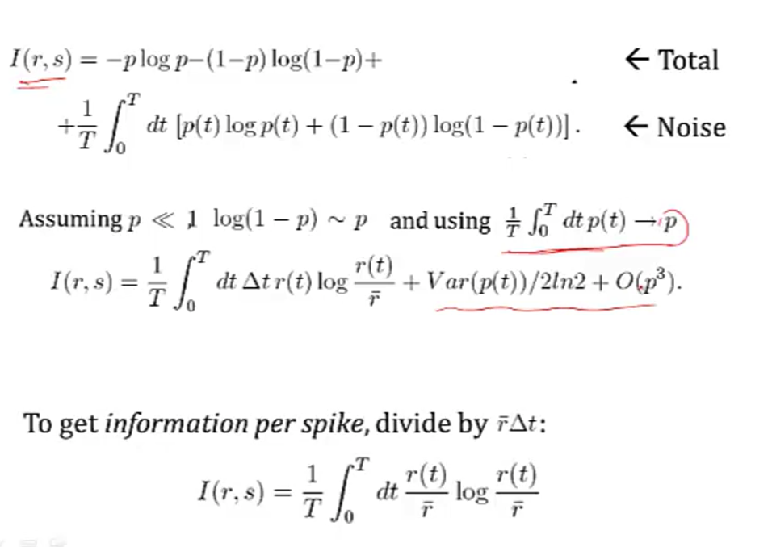

7.3. comp neuro¶
7.3.1. introduction¶
7.3.1.1. overview¶
does biology have a cutoff level (likecutoffs in computers below which fluctuations don’t matter)
core principles underlying these two questions
how do brains work?
how do you build an intelligent machine?
lacking: insight from neuro that can help build machine
scales: cortex, column, neuron, synapses
physics: theory and practice are much closer
are there principles?
“god is a hacker” - francis crick
theorists are lazy - ramon y cajal
things seemed like mush but became more clear - horace barlow
principles of neural design book
felleman & van essen 1991
ascending layers (e.g. v1-> v2): goes from superficial to deep layers
descending layers (e.g. v2 -> v1): deep layers to superficial
solari & stoner 2011 “cognitive consilience” - layers thicknesses change in different parts of the brain
motor cortex has much smaller input (layer 4), since it is mostly output
7.3.1.2. historical ai¶
people: turing, von neumman, marvin minsky, mccarthy…
ai: birth at 1956 conference
vision: marvin minsky thought it would be a summer project
lighthill debate 1973 - was ai worth funding?
intelligence tends to be developed by young children…
cortex grew very rapidly
7.3.1.3. historical cybernetics/nns¶
people: norbert weiner, mcculloch & pitts, rosenblatt
neuro
hubel & weisel (1962, 1965) simple, complex, hypercomplex cells
neocognitron fukushima 1980
david marr: theory, representation, implementation
7.3.1.4. types of models¶
three types
descriptive brain model - encode / decode external stimuli
mechanistic brian cell / network model - simulate the behavior of a single neuron / network
interpretive (or normative) brain model - why do brain circuits operate how they do
receptive field - the things that make a neuron fire
retina has on-center / off-surround cells - stimulated by points
then, V1 has differently shaped receptive fields
efficient coding hypothesis - learns different combinations (e.g. lines) that can efficiently represent images
sparse coding (Olshausen and Field 1996)
ICA (Bell and Sejnowski 1997)
Predictive Coding (Rao and Ballard 1999)
brain is trying to learn faithful and efficient representations of an animal’s natural environment
same goes for auditory cortex
7.3.2. biophysical models¶
7.3.2.1. modeling neurons¶

nernst battery
osmosis (for each ion)
electrostatic forces (for each ion)
together these yield Nernst potential \(E = \frac{k_B T}{zq} ln \frac{[in]}{[out]}\)
T is temp
q is ionic charge
z is num charges
part of voltage is accounted for by nernst battery \(V_{rest}\)
yields \(\tau \frac{dV}{dt} = -V + V_\infty\) where \(\tau=R_mC_m=r_mc_m\)
equivalently, \(\tau_m \frac{dV}{dt} = -((V-E_L) - g_s(t)(V-E_s) r_m) + I_e R_m \)

7.3.2.2. simplified model neurons¶
integrate-and-fire neuron
passive membrane (neuron charges)
when V = V\(_{thresh}\), a spike is fired
then V = V\(_{reset}\)
doesn’t have good modeling near threshold
can include threshold by saying
when V = V\(_{max}\), a spike is fired
then V = V\(_{reset}\)
modeling multiple variables
also model a K current
can capture things like resonance
theta neuron (Ermentrout and Kopell)

often used for periodically firing neurons (it fires spontaneously)
7.3.2.3. a forest of dendrites¶
cable theory - Kelvin
voltage V is a function of both x and t

separate into sections that don’t depend on x
coupling conductances link the sections (based on area of compartments / branching)
Rall model for dendrites
if branches obey a certain branching ratio, can replace each pair of branches with a single cable segment with equivalent surface area and electrotonic length
\(d_1^{3/2} = d_{11}^{3/2} + d_{12}^{3/2}\)
dendritic computation (London and Hausser 2005)
hippocampus - when inputs arrive at soma, similiar shape no matter where they come in = synaptic scaling
where inputs enter influences how they sum
dendrites can generate spikes (usually calcium) / backpropagating spikes
ex. Jeffress model - sound localized based on timing difference between ears
ex. direction selectivity in retinal ganglion cells - if events arive at dendrite far -> close, all get to soma at same time and add
7.3.2.4. circuit-modeling basics¶
membrane has capacitance \(C_m\)
force for diffusion, force for drift
can write down diffeq for this, which yields an equilibrium
\(\tau = RC\)
bigger \(\tau\) is slower
to increase capacitance
could have larger diameter
\(C_m \propto D\)
axial resistance \(R_A \propto 1/D^2\) (not same as membrane lerk), thus bigger axons actually charge faster
7.3.2.5. action potentials¶
channel/receptor types
ionotropic: \(G_{ion}\) = f(molecules outside)
something binds and opens channel
metabotropic: \(G_{ion}\) = f(molecules inside)
doesn’t directly open a channel: indirect
others
photoreceptor
hair cell
voltage-gated (active - provide gain; might not require active ATP, other channels are all passive)
7.3.2.6. physics of computation¶
based on carver mead: drift and diffusion are at the heart of everything
different things realted by the Boltzmann distr. (ex. distr of air molecules vs elevation. Subject to gravity and diffusion upwards since they’re colliding)
nernst potential
current-voltage relation of voltage-gated channels
current-voltage relation of MOS transistor
these things are all like transistor: energy barrier that must be overcome
neuromorphic examples
differential pair sigmoid yields sigmoid-like function
can compute tanh function really simply to simulate
silicon retina
lateral inhibition exists (gap junctions in horizontal cells)
mead & mahowald 1989 - analog VLSI retina (center-surround receptive field is very low energy)
computation requires energy (otherwise signals would dissipate)
von neumann architecture: CPU - bus (data / address) - Memory
moore’s law ending (in terms of cost, clock speed, etc.)
ex. errors increase as device size decreases (and can’t tolerate any errors)
neuromorphic computing
brain ~ 20 Watts
exploit intrinsic transistor physics (need extremely small amounts of current)
exploit electronics laws kirchoff’s law, ohm’s law
new materials (ex. memristor - 3d crossbar array)
can’t just do biological mimicry - need to understand the principles
7.3.2.7. spiking neurons¶
passive membrane model was leaky integrator
voltage-gaed channels were more complicated
can be though of as leaky integrate-and-fire neuron (LIF)
this charges up and then fires a spike, has refractory period, then starts charging up again
rate coding hypothesis - signal conveyed is the rate of spiking (bruno thinks this is usually too simple)
spiking irregulariy is largely due to noise and doesn’t convey information
some neurons (e.g. neurons in LIP) might actually just convey a rate
linear-nonlinear-poisson model (LNP) - sometimes called GLM (generalized linear model)
based on observation that variance in firing rate \(\propto\) mean firing rate
plotting mean vs variance = 1 \(\implies\) Poisson output
these led people to model firing rates as Poisson \(\frac {\lambda^n e^{-\lambda}} {n!}\)
bruno doesn’t really believe the firing is random (just an effect of other things we can’t measure)
ex. fly H1 neuron 1997
constant stimulus looks very Poisson
moving stimulus looks very Bernoulli
spike timing hypothesis
spiece timing can be very precise in response to time-varying signals (mainen & sejnowski 1995; bair & koch 1996)
often see precise timing
encoding: stimulus \(\to\) spikes
decoding: spikes \(\to\) representation
encoding + decoding are related through the joint distr. over simulus and repsonse (see Bialek spikes book)
nonlinear encoding function can yield linear decoding
able to directly decode spikes using a kernel to reproduce signal (seems to say you need spikes - rates would not be good enough)
some reactions happen too fast to average spikes (e.g. 30 ms)
estimating information rate: bits (usually better than snr - can calculate between them) - usually 2-3 bits/spike
7.3.3. neural coding¶
7.3.3.1. neural encoding¶
7.3.3.1.1. defining neural code¶
extracellular
fMRI
averaged over space
slow, requires seconds
EEG
noisy
averaged, but faster
multielectrode array
record from several individual neurons at once
calcium imaging
cells have calcium indicator that fluoresce when calcium enters a cell
intracellular - can use patch electrodes
raster plot
replay a movie many times and record from retinal ganglion cells during movie
encoding: P(response | stimulus)
tuning curve - neuron’s response (ex. firing rate) as a function of stimulus
orientation / color selective cells are distributed in organized fashion
some neurons fire to a concept, like “Pamela Anderson”
retina (simple) -> V1 (orientations) -> V4 (combinations) -> ?
also massive feedback
decoding: P(stimulus | response)
7.3.3.1.2. simple encoding¶
want P(response | stimulus)
response := firing rate r(t)
stimulus := s
simple linear model
r(t) = c * s(t)
weighted linear model - takes into account previous states weighted by f
temporal filtering
r(t) = \(f_0 \cdot s_0 + ... + f_t \cdot s_t = \sum s_{t-k} f_k\) where f weights stimulus over time
could also make this an integral, yielding a convolution:
r(t) = \(\int_{-\infty}^t d\tau \: s(t-\tau) f(\tau)\)
a linear system can be thought of as a system that searches for portions of the signal that resemble its filter f
leaky integrator - sums its inputs with f decaying exponentially into the past
flaws
no negative firing rates
no extremely high firing rates
can add a nonlinear function g of the linear sum can fix this
r(t) = \(g(\int_{-\infty}^t d\tau \: s(t-\tau) f(\tau))\)
spatial filtering
r(x,y) = \(\sum_{x',y'} s_{x-x',y-y'} f_{x',y'}\) where f again is spatial weights that represent the spatial field
could also write this as a convolution
for a retinal center surround cell, f is positive for small \(\Delta x\) and then negative for large \(\Delta x\)
can be calculated as a narrow, large positive Gaussian + spread out negative Gaussian
can combine above to make spatiotemporal filtering
filtering = convolution = projection
7.3.3.1.3. feature selection¶
P(response|stimulus) is very hard to get
stimulus can be high-dimensional (e.g. video)
stimulus can take on many values
need to keep track of stimulus over time
solution: sample P(response|s) to many stimuli to characterize what in input triggers responses
find vector f that captures features that lead to spike
dimensionality reduction - ex. discretize
value at each time \(t_i\) is new dimension
commonly use Gaussian white noise
time step sets cutoff of highest frequency present
prior distribution - distribution of stimulus
multivariate Gaussian - Gaussian in any dimension, or any linear combination of dimensions
look at where spike-triggering points are and calculate spike-triggered average f of features that led to spike
use this f as filter
determining the nonlinear input/output function g
replace stimulus in P(spike|stimulus) with P(spike|\(s_1\)), where s1 is our filtered stimulus
use bayes rule \(g=P(spike\|s_1)=\frac{P(s_1\|spike)P(spike)}{P(s_1)}\)
if \(P(s_1\|spike) \approx P(s_1)\) then response doesn’t seem to have to do with stimulus
incorporating many features \(f_1,...,f_n\)
here, each \(f_i\) is a vector of weights
\(r(t) = g(f_1\cdot s,f_2 \cdot s,...,f_n \cdot s)\)
could use PCA - discovers low-dimensional structure in high-dimensional data
each f represents a feature (maybe a curve over time) that fires the neuron
7.3.3.1.4. variability¶
hidden assumptions about time-varying firing rate and single spikes
smooth function RFT can miss some stimuli
statistics of stimulus can effect P(spike|stimulus)
Gaussian white noise is nice because no way to filter it to get structure
identifying good filter
want \(P(s_f\|spike)\) to differ from \(P(s_f)\) where \(s_f\) is calculated via the filter
instead of PCA, could look for f that directly maximizes this difference (Sharpee & Bialek, 2004)
Kullback-Leibler divergence - calculates difference between 2 distributions
\(D_{KL}(P(s),Q(s)) = \int ds P(s) log_2 P(s) / Q(s)\)
maximizing KL divergence is equivalent to maximizing mutual info between spike and stimulus
this is because we are looking for most informative feature
this technique doesn’t require that our stimulus is white noise, so can use natural stimuli
maximization isn’t guaranteed to uniquely converge
modeling the noise
need to go from r(t) -> spike times
divide time T into n bins with p = probability of firing per bin
over some chunk T, number of spikes follows binomial distribution (n, p)
mean = np
var = np(1-p)
if n gets very large, binomial approximates Poisson
\(\lambda\) = spikes in some set time
mean = \(\lambda\)
var = \(\lambda\)
can test if distr is Poisson with Fano factor=mean/var=1
interspike intervals have exponential distribution - if fires a lot, this can be bad assumption (due to refractory period)
generalized linear model adds explicit spike-generation / post-spike filter (Pillow et al. 2008)

post-spike filter models refractory period
Paninski showed that using exponential nonlinearity allows this to be optimized
could add in firing of other neurons
time-rescaling theorem - tests how well we have captured influences on spiking (Brown et al 2001)
scaled ISIs (\(t_{i-1}-t_i\)) r(t) should be exponential
7.3.3.2. neural decoding¶
7.3.3.2.1. neural decoding and signal detection¶
decoding: P(stimulus | response) - ex. you hear noise and want to tell what it is
here r = response = firing rate
monkey is trained to move eyes in same direction as dot pattern (Britten et al. 92)
when dots all move in same direction (100% coherence), easy
neuron recorded in MT - tracks dots
count firing rate when monkey tracks in right direction
count firing rate when monkey tracks in wrong direction
as coherence decreases, these firing rates blur
need to get P(+ or - | r)
can set a threshold on r by maximizing likelihood
P(r|+) and P(r|-) are likelihoods
Neyman-Pearson lemma - likelihood ratio test is the most efficient statistic, in that is has the most power for a given size
\(\frac{p(r\|+)}{p(r\|-)} > 1?\)
accumulated evidence - we can accumulate evidence over time by multiplying these probabilities
instead we take sum the logs, and compare to 0
\(\sum_i ln \frac{p(r_i\|+)}{p(r_i\|-)} > 0?\)
once we hit some threshold for this sum, we can make a decision + or -
experimental evidence (Kiani, Hanks, & Shadlen, Nat. Neurosci 2006)
monkey is making decision about whether dots are moving left/right
neuron firing rates increase over time, representing integrated evidence
neuron always seems to stop at same firing rate
priors - ex. tiger is much less likely then breeze
scale P(+|r) by prior P(+)
neuroscience ex. photoreceptor cells P(noise|r) is much larger than P(signal|r)
therefore threshold on r is high to minimize total mistakes
cost of acting/not acting
loss for predicting + when it is -: \(L_- \cdot P[+\|r]\)
loss for predicting - when it is +: \(L_+ \cdot P[-\|r]\)
cut your losses: answer + when average Loss\(_+\) < Loss\(_-\)
i.e. \(L_+ \cdot P[-\|r]\) < \(L_- \cdot P[+\|r]\)
rewriting with Baye’s rule yields new test:
\(\frac{p(r\|+)}{p(r\|-)}> L_+ \cdot P[-] / L_- \cdot P[+]\)
here the loss term replaces the 1 in the Neyman-Pearson lemma
7.3.3.2.2. population coding and bayesian estimation¶
population vector - sums vectors for cells that point in different directions weighted by their firing rates
ex. cricket cercal cells sense wind in different directions
since neuron can’t have negative firing rate, need overcomplete basis so that can record wind in both directions along an axis
can do the same thing for direction of arm movement in a neural prosthesis
not general - some neurons aren’t tuned, are noisier
not optimal - making use of all information in the stimulus/response distributions
bayesian inference
\(p(s\|r) = \frac{p(r\|s)p(s)}{p( r)}\)

maximum likelihood: s* which maximizes p(r|s)
MAP = maximum \(a\:posteriori\): s* which mazimizes p(s|r)
simple continuous stimulus example
setup
s - orientation of an edge
each neuron’s average firing rate=tuning curve \(f_a(s)\) is Gaussian (in s)
let \(r_a\) be number of spikes for neuron a
assume receptive fields of neurons span s: \(\sum r_a (s)\) is const

solving
maximizing log-likelihood with respect to s - take derivative and set to 0
soln \(s^* = \frac{\sum r_a s_a / \sigma_a^2}{\sum r_a / \sigma_a^2}\)
if all the \(\sigma\) are same, \(s^* = \frac{\sum r_a s_a}{\sum r_a}\)
this is the population vector
maximum a posteriori
\(ln \: p(s\|r) = ln \: P(r\|s) + ln \: p(s) = ln \: P(r )\)
\(s^* = \frac{T \sum r_a s_a / \sigma^2_a + s_{prior} / \sigma^2_{prior}}{T \sum r_a / \sigma^2_a + 1/\sigma^2_{prior}}\)
this takes into account the prior
narrow prior makes it matter more
doesn’t incorporate correlations in the population
7.3.3.2.3. stimulus reconstruction¶
decoding s -> \(s^*\)
want an estimator \(s_{Bayes}=s_B\) given some response r
error function \(L(s,s_{B})=(s-s_{B})^2\)
minimize \(\int ds \: L(s,s_{B}) \: p(s\|r)\) by taking derivative with respect to \(s_B\)
\(s_B = \int ds \: p(s\|r) \: s\) - the conditional mean (spike-triggered average)
add in spike-triggered average at each spike
if spike-triggered average looks exponential, can never have smooth downwards stimulus
could use 2 neurons (like in H1) and replay the second with negative sign
LGN neurons can reconstruct a video, but with noise
recreated 1 sec long movies - (Jack Gallant - Nishimoto et al. 2011, Current Biology)
voxel-based encoding model samples ton of prior clips and predicts signal
get p(r|s)
pick best p(r|s) by comparing predicted signal to actual signal
input is filtered to extract certain features
filtered again to account for slow timescale of BOLD signal
decoding
maximize p(s|r) by maximizing p(r|s) p(s), and assume p(s) uniform
30 signals that have highest match to predicted signal are averaged
yields pretty good pictures
7.3.3.3. information theory¶
7.3.3.3.1. information and entropy¶
surprise for seeing a spike h(p) = \(-log_2 (p)\)
entropy = average information
code might not align spikes with what we are encoding
how much of the variability in r is encoding s
define q as en error
\(P(r_+\|s=+)=1-q\)
\(P(r_-\|s=+)=q\)
similar for when s=-
total entropy: \(H(R ) = - P(r_+) log P(r_+) - P(r_-)log P(r_-)\)
noise entropy: \(H(R\|S=+) = -q log q - (1-q) log (1-q)\)
mutual info I(S;R) = \(H(R ) - H(R\|S) \) = total entropy - average noise entropy
= \(D_{KL} (P(R,S), P(R )P(S))\)
grandma’s famous mutual info recipe
for each s
P(R|s) - take one stimulus and repeat many times (or run for a long time)
H(R|s) - noise entropy
\(H(R\|S)=\sum_s P(s) H(R\|s)\)
\(H(R ) \) calculated using \(P(R ) = \sum_s P(s) P(R\|s)\)
7.3.3.3.2. information in spike trains¶
information in spike patterns
divide pattern into time bins of 0 (no spike) and 1 (spike)
binary words w with letter size \(\Delta t\), length T (Reinagel & Reid 2000)
can create histogram of each word
can calculate entropy of word
look at distribution of words for just one stimulus
distribution should be narrower
calculate \(H_{noise}\) - average over time with random stimuli and calculate entropy
varied parameters of word: length of bin (dt) and length of word (T)
there’s some limit to dt at which information stops increasing
this represents temporal resolution at which jitter doesn’t stop response from identifying info about the stimulus
corrections for finite sample size (Panzeri, Nemenman,…)
information in single spikes - how much info does single spike tell us about stimulus
don’t have to know encoding, mutual info doesn’t care
calculate entropy for random stimulus - \(p=\bar{r} \Delta t\) where \(\bar{r}\) is the mean firing rate
calculate entropy for specific stimulus
let \(P(r=1\|s) = r(t) \Delta t\)
let \(P(r=0\|s) = 1 - r(t) \Delta t\)
get r(t) by having simulus on for long time
ergodicity - a time average is equivalent to averging over the s ensemble

info per spike \(I(r,s) = \frac{1}{T} \int_0^T dt \frac{r(t)}{\bar{r}} log \frac{r(t)}{\bar{r}}\)
timing precision reduces r(t)
low mean spike rate -> high info per spike
ex. rat runs through place field and only fires when it’s in place field
spikes can be sharper, more / less frequent
7.3.3.3.3. coding principles¶
natural stimuli
huge dynamic range - variations over many orders of magnitude (ex. brightness)
power law scaling - structure at many scales (ex. far away things)
efficient coding - in order to have maximum entropy output, a good encoder should match its outputs to the distribution of its inputs
want to use each of our “symbols” (ex. different firing rates) equally often
should assign equal areas of input stimulus PDF to each symbol
adaptataion to stimulus statistics

feature adaptation (Atick and Redlich)
spatial filtering properties in retina / LGN change with varying light levels
at low light levels surround becomes weaker
coding sechemes
redundancy reduction
population code \(P(R_1,R_2)\)
entropy \(H(R_1,R_2) \leq H(R_1) + H(R_2)\) - being independent would maximize entropy
correlations can be good
error correction and robust coding
correlations can help discrimination
retina neurons are redundant (Berry, Chichilnisky)
more recently, sparse coding
penalize weights of basis functions
instead, we get localized features
we ignored the behavioral feedback loop
7.3.4. computing with networks¶
7.3.4.1. modeling connections between neurons¶
model effects of synapse by using synaptic conductance \(g_s\) with reversal potential \(E_s\)
\(g_s = g_{s,max} \cdot P_{rel} \cdot P_s\)
\(P_{rel}\) - probability of release given an input spike
\(P_s\) - probability of postsynaptic channel opening = fraction of channels opened
basic synapse model
assume \(P_{rel}=1\)
model \(P_s\) with kinetic model
open based on \(\alpha_s\)
close based on \(\beta_s\)
yields \(\frac{dP_s}{dt} = \alpha_s (1-P_s) - \beta_s P_s\)
3 synapse types
AMPA - well-fit by exponential
GAMA - fit by “alpha” function - has some delay
NMDA - fit by “alpha” function - has some delay
linear filter model of a synapse
pick filter (ex. K(t) ~ exponential)
\(g_s = g_{s,max} \sum K(t-t_i)\)
network of integrate-and-fire neurons
if 2 neurons inhibit each other, get synchrony (fire at the same time
7.3.4.2. intro to network models¶
comparing spiking models to firing-rate models
advantages
spike timing
spike correlations / synchrony between neurons
disadvantages
computationally expensive
uses linear filter model of a synapse
developing a firing-rate model
replace spike train \(\rho_1(t) \to u_1(t)\)
can’t make this replacement when there are correlations / synchrony?
input current \(I_s\): \(\tau_s \frac{dI_s}{dt}=-I_s + \mathbf{w} \cdot \mathbf{u}\)
works only if we let K be exponential
output firing rate: \(\tau_r \frac{d\nu}{dt} = -\nu + F(I_s(t))\)
if synapses are fast (\(\tau_s << \tau_r\))
\(\tau_r \frac{d\nu}{dt} = -\nu + F(\mathbf{w} \cdot \mathbf{u}))\)
if synapses are slow (\(\tau_r << \tau_s\))
\(\nu = F(I_s(t))\)
if static inputs (input doesn’t change) - this is like artificial neural network, where F is sigmoid
\(\nu_{\infty} = F(\mathbf{w} \cdot \mathbf{u})\)
could make these all vectors to extend to multiple output neurons
recurrent networks
\(\tau \frac{d\mathbf{v}}{dt} = -\mathbf{v} + F(W\mathbf{u} + M \mathbf{v})\)
\(-\mathbf{v}\) is decay
\(W\mathbf{u}\) is input
\(M \mathbf{v}\) is feedback
with constant input, \(v_{\infty} = W \mathbf{u}\)
ex. edge detectors
V1 neurons are basically computing derivatives
7.3.4.3. recurrent networks¶
linear recurrent network: \(\tau \frac{d\mathbf{v}}{dt} = -\mathbf{v} + W\mathbf{u} + M \mathbf{v}\)
let \(\mathbf{h} = W\mathbf{u}\)
want to investiage different M
can solve eq for \(\mathbf{v}\) using eigenvectors
suppose M (NxN) is symmetric (connections are equal in both directions)
\(\to\) M has N orthogonal eigenvectors / eigenvalues
let \(e_i\) be the orthonormal eigenvectors
output vector \(\mathbf{v}(t) = \sum c_i (t) \mathbf{e_i}\)
allows us to get a closed-form solution for \(c_i(t)\)
eigenvalues determine network stability
if any \(\lambda_i > 1, \mathbf{v}(t)\) explodes \(\implies\) network is unstable
otherwise stable and converges to steady-state value
\(\mathbf{v}_\infty = \sum \frac{h\cdot e_i}{1-\lambda_i} e_i\)
amplification of input projection by a factor of \(\frac{1}{1-\lambda_i}\)
ex. each output neuron codes for an angle between -180 to 180
define M as cosine function of relative angle
excitation nearby, inhibition further away
memory in linear recurrent networks
suppose \(\lambda_1=1\) and all other \(\lambda_i < 1\)
then \(\tau \frac{dc_1}{dt} = h \cdot e_1\) - keeps memory of input
ex. memory of eye position in medial vestibular nucleus (Seung et al. 2000)
integrator neuron maintains persistent activity
nonlinear recurrent networks: \(\tau \frac{d\mathbf{v}}{dt} = -\mathbf{v} + F(\mathbf{h}+ M \mathbf{v})\)
ex. rectification linearity F(x) = max(0,x)
ensures that firing rates never go below
can have eigenvalues > 1 but stable due to rectification
can perform selective “attention”
network performs “winner-takes-all” input selection
gain modulation - adding constant amount to input h multiplies the output
also maintains memory
non-symmetric recurrent networks
ex. excitatory and inhibitory neurons
linear stability analysis - find fixed points and take partial derivatives
use eigenvalues to determine dynamics of the nonlinear network near a fixed point
7.3.4.3.1. hopfield nets¶
hopfield nets can store / retrieve memories
fully connected (no input/output) - activations are what matter
can memorize patterns - starting with noisy patterns can converge to these patterns
marr-pogio stereo algorithm
hopfield three-way connections
\(E = - \sum_{i, j, k} T_{i, j, k} V_i V_j V_k\) (self connections set to 0)
update to \(V_i\) is now bilinear
hopfield nets are all you need
keys: each input has a key vector which “represents info about this input” (e.g. this is a noun)
queries: each input has a query vector which “asks for other inputs that would be useful context” (e.g. what adjectives describe this word)
in self-attention these queries also come from the input whereas in just regular attention they come from somewhere else (e.g. the output of a translation task)
transformer finds similarity between each key with each query then takes softmax - this provides weights for each of the inputs, as context for the original input
in transformer, these weights are used to weight the values but in hopfield nets we would take a weighted sum of the keys and feed it back as the input
as we update becomes more skewed towards the things that match the most
7.3.5. learning¶
7.3.5.1. supervised learning¶
net talk was major breakthrough (words -> audio) Sejnowski & Rosenberg 1987
people looked for world-centric receptive fields (so neurons responded to things not relative to retina but relative to body) but didn’t find them
however, they did find gain fields: (Zipser & Anderson, 1987)
gain changes based on what retina is pointing at
trained nn to go from pixels to head-centered coordinate frame
yielded gain fields
pouget et al. were able to find that this helped having 2 pop vectors: one for retina, one for eye, then add to account for it
support vector networks (vapnik et al.) - svms early inspired from nns
dendritic nonlinearities (hausser & mel 03)
example to think about neurons due this: \(u = w_1 x_1 + w_2x_2 + w_{12}x_1x_2\)
\(y=\sigma(u)\)
somestimes called sigma-pi unit since it’s a sum of products
exponential number of params…could be fixed w/ kernel trick?
could also incorporate geometry constraint…
7.3.5.2. unsupervised learning¶
born w/ extremely strong priors on weights in different areas
barlow 1961, attneave 1954: efficient coding hypothesis = redundancy reduction hypothesis
representation: compression / usefulness
easier to store prior probabilities (because inputs are independent)
relich 93: redundancy reduction for unsupervised learning (text ex. learns words from text w/out spaces)
7.3.5.2.1. hebbian learning and pca¶
pca can also be thought of as a tool for decorrelation (in pc dimension, tends to be less correlated)
hebbian learning = fire together, wire together: \(\Delta w_{ab} \propto <a, b>\) note: \(<a, b>\) is correlation of a and b (average over time)
linear hebbian learning (perceptron with linear output)
\(\dot{w}_i \propto <y, x_i> \propto \sum_j w_j <x_j, x_i>\) since weights change relatively slowly
synapse couldn’t do this, would grow too large
oja’s rule (hebbian learning w/ weight decay so ws don’t get too big)
points to correct direction
sanger’s rule: for multiple neurons, fit residuals of other neurons
competitive learning rule: winner take all
population nonlinearity is a max
gets stuck in local minima (basically k-means)
pca only really good when data is gaussian
interesting problems are non-gaussian, non-linear, non-convex
pca: yields checkerboards that get increasingly complex (because images are smooth, can describe with smaller checkerboards)
this is what jpeg does
very similar to discrete cosine transform (DCT)
very hard for neurons to get receptive fields that look like this
retina: does whitening (yields center-surround receptive fields)
easier to build
gets more even outputs
only has ~1.5 million fibers
7.3.5.3. synaptic plasticity, hebb’s rule, and statistical learning¶
if 2 spikes keep firing at same time, get LTP - long-term potentiation
if input fires, but not B then could get LTD - long-term depression
Hebb rule \(\tau_w \frac{d\mathbf{w}}{dt} = \mathbf{x}v\)
\(\mathbf{x}\) - input
\(v\) - output
translates to \(\mathbf{w}_{i+1}=\mathbf{w}_i + \epsilon \cdot \mathbf{x}v\)
average effect of the rule is to change based on correlation matrix \(\mathbf{x}^T\mathbf{x}\)
covariance rule: \(\tau_w \frac{d\mathbf{w}}{dt} = \mathbf{x}(v-E[v])\)
includes LTD as well as LTP
Oja’s rule: \(\tau_w \frac{d\mathbf{w}}{dt} = \mathbf{x}v- \alpha v^2 \mathbf{w}\) where \(\alpha>0\)
stability
Hebb rule - derivative of w is always positive \(\implies\) w grows without bound
covariance rule - derivative of w is still always positive \(\implies\) w grows without bound
could add constraint that \(\|\|w\|\|=1\) and normalize w after every step
Oja’s rule - \(\|\|w\|\| = 1/\sqrt{alpha}\), so stable
solving Hebb rule \(\tau_w \frac{d\mathbf{w}}{dt} = Q w\) where Q represents correlation matrix
write w(t) in terms of eigenvectors of Q
lets us solve for \(\mathbf{w}(t)=\sum_i c_i(0)exp(\lambda_i t / \tau_w) \mathbf{e}_i\)
when t is large, largest eigenvalue dominates
hebbian learning implements PCA
hebbian learning learns w aligned with principal eigenvector of input correlation matrix
this is same as PCA
7.3.5.4. intro to unsupervised learning¶

most active neuron is the one whose w is closest to x
competitive learning
updating weights given a new input
pick a cluster (corresponds to most active neuron)
set weight vector for that cluster to running average of all inputs in that cluster
\(\Delta w = \epsilon \cdot (\mathbf{x} - \mathbf{w})\)
related to self-organizing maps = kohonen maps
in self-organizing maps also update other neurons in the neighborhood of the winner
update winner closer
update neighbors to also be closer
ex. V1 has orientation preference maps that do this
7.3.5.5. sparse coding and predictive coding¶
eigenface - Turk and Pentland 1991
eigenvectors of the input covariance matrix are good features
can represent images using sum of eigenvectors (orthonormal basis)
suppose you use only first M principal eigenvectors
then there is some noise
can use this for compression
not good for local components of an image (e.g. parts of face, local edges)
if you assume Gausian noise, maximizing likelihood = minimizing squared error
generative model
images X
causes
likelihood P(X=x|C=c)
Gaussian
proportional to \(exp(x-Gc)\)
want posterior P(C|X)
prior p(C )
assume priors causes are independent
want sparse distribution
has heavy tail (super-Gaussian distribution)
then P(C ) = \(k \cdot \prod exp(g(C_i))\)
can implement sparse coding in a recurrent neural network
Olshausen & Field, 1996 - learns receptive fields in V1
sparse coding is a special case of predicive coding

there is usually a feedback connection for every feedforward connection (Rao & Ballard, 1999)
7.3.5.6. sparse, distributed coding¶
- \[\underset {\mathbf{D}} \min \underset t \sum \underset {\mathbf{h^{(t)}}} \min ||\mathbf{x^{(t)}} - \mathbf{Dh^{(t)}}||_2^2 + \lambda ||\mathbf{h^{(t)}}||_1\]
D is like autoencoder output weight matrix
h is more complicated - requires solving inner minimization problem
outer loop is not quite lasso - weights are not what is penalized
barlow 1972: want to represent stimulus with minimum active neurons
neurons farther in cortex are more silent
v1 is highly overcomplete (dimensionality expansion)
codes: dense -> sparse, distributed \(n \choose k\) -> local (grandmother cells)
energy argument - bruno doesn’t think it’s a big deal (could just not have a brain)
PCA: autoencoder when you enforce weights to be orthonormal
retina must output encoded inputs as spikes, lower dimension -> uses whitening
cortex
sparse coding different kind of autencoder bottleneck (imposes sparsity)
using bottlenecks in autoencoders forces you to find structure in data
v1 simple-cell receptive fields are localized, oriented, and bandpass
higher-order image statistics
phase alignment
orientation (requires at least 3 points stats (like orientation)
motion
how to learn sparse repr?
foldiak 1990 forming sparse reprs by local anti-hebbian learning
driven by inputs and gets lateral inhibition and sum threshold
neurons drift towards some firing rate naturally (adjust threshold naturally)
use higher-order statistics
projection pursuit (field 1994) - maximize non-gaussianity of projections
CLT says random projections should look gaussian
gabor-filter response histogram over natural images look non-Gaussian (sparse) - peaked at 0
doesn’t work for graded signals
sparse coding for graded signals: olshausen & field, 1996
\(\underset{Image}{I(x, y)} = \sum_i a_i \phi_i (x, y) + \epsilon (x,y)\)
loss function \(\frac{1}{2} |I - \phi a|^2 + \lambda \sum_i C(a_i)\)
can think about difference between \(L_1\) and \(L_2\) as having preferred directions (for the same length of vector) - prefer directions which some zeros
in terms of optimization, smooth near zero
there is a network implementation
\(a_i\)are calculated by solvin optimization for each image, \(\phi\) is learned more slowly
can you get \(a_i\) closed form soln?
wavelets invented in 1980s/1990s for sparsity + compression
these tuning curves match those of real v1 neurons
applications
for time, have spatiotemporal basis where local wavelet moves
sparse coding of natural sounds
audition like a movie with two pixels (each ear sounds independent)
converges to gamma tone functions, which is what auditory fibers look like
sparse coding to neural recordings - finds spikes in neurons
learns that different layers activate together, different frequencies come out
found place cell bases for LFP in hippocampus
nonnegative matrix factorization - like sparse coding but enforces nonnegative
can explicitly enforce nonnegativity
LCA algorithm lets us implement sparse coding in biologically plausible local manner
explaining away - neural responses at the population should be decodable (shouldn’t be ambiguous)
good project: understanding properties of sparse coding bases
SNR = \(VAR(I) / VAR(|I- \phi A|)\)
can run on data after whitening
graph is of power vs frequency (images go down as \(1/f\)), need to weighten with f
don’t whiten highest frequencies (because really just noise)
need to do this softly - roughly what the retina does
as a result higher spatial frequency activations have less variance
whitening effect on sparse coding
if you don’t whiten, have some directions that have much more variance
projects
applying to different types of data (ex. auditory)
adding more bases as time goes on
combining convolution w/ sparse coding?
people didn’t see sparsity for a while because they were using very specific stimuli and specific neurons
now people with less biased sampling are finding more sparsity
in cortex anasthesia tends to lower firing rates, but opposite in hippocampus
7.3.5.7. self-organizing maps¶
homunculus - 3d map corresponds to map in cortex (sensory + motor)
visual cortex
visual cortex mostly devoted to center
different neurons in same regions sensitive to different orientations (changing smoothly)
orientation constant along column
orientation maps not found in mice (but in cats, monkeys)
direction selective cells as well
maps are plastic - cortex devoted to particular tasks expands (not passive, needs to be active)
kids therapy with tone-tracking video games at higher and higher frequencies
7.3.6. ml analogies¶
7.3.6.1. Brain theories¶
Computational Theory of Mind
Classical associationism
Connectionism -Situated cognition -Memory-prediction framework -Fractal Theory: https://www.youtube.com/watch?v=axaH4HFzA24 -Brain sheets are made of cortical columns (about .3mm diameter, 1000 neurons / column) -Have ~6 layers
7.3.6.2. brain as a computer¶
Brain as a Computer – Analog VLSI and Neural Systems by Mead (VLSI – very large scale integration) -Brain Computer Analogy -Process info -Signals represented by potential -Signals are amplified = gain -Power supply -Knowledge is not stored in knowledge of the parts, but in their connections -Based on electrically charged entities interacting with energy barriers -http://en.wikipedia.org/wiki/Computational_theory_of_mind -http://scienceblogs.com/developingintelligence/2007/03/27/why-the-brain-is-not-like-a-co/ -Brain’ storage capacity is about 2.5 petabytes (Scientific American, 2005) -Electronics -Voltage can be thought of as water in a reservoir at a height -It can flow down, but the water will never reach above the initial voltage -A capacitor is like a tank that collects the water under the reservoir -The capacitance is the cross-sectional area of the tank -Capacitance – electrical charge required to raise the potential by 1 volt -Conductance = 1/ resistance = mho, siemens -We could also say the word is a computer with individuals being the processors – with all the wasted thoughts we have – the solution is probably to identify global problems and channel people’s focus towards working on them -Brain chip: http://www.research.ibm.com/articles/brain-chip.shtml -Differences: What Can AI Get from Neuroscience? -Brains are not digital -Brains don’t have a CPU -Memories are not separable from processing -Asynchronous and continuous -Details of brain substrate matter -Feedback and Circular Causality -Asking questions -Brains has lots of sensors -Lots of cellular diversity -NI uses lots of parallelism -Delays are part of the computation
7.3.6.3. Brain v. Deep Learning¶
http://timdettmers.com/
problems with brain simulations:
Not possible to test specific scientific hypotheses (compare this to the large hadron collider project with its perfectly defined hypotheses)
Does not simulate real brain processing (no firing connections, no biological interactions)
Does not give any insight into the functionality of brain processing (the meaning of the simulated activity is not assessed)
Neuron information processing parts
Dendritic spikes are like first layer of conv net
Neurons will typically have a genome that is different from the original genome that you were assigned to at birth. Neurons may have additional or fewer chromosomes and have sequences of information removed or added from certain chromosomes.
http://timdettmers.com/2015/03/26/convolution-deep-learning/
The adult brain has 86 billion neurons, about 10 trillion synapse, and about 300 billion dendrites (tree-like structures with synapses on them
7.3.7. probabilistic models + inference¶
Wiener filter
has Gaussian prior + likelihoodfor gaussian function, \(d/dx f(x) = -x f(x)\)
7.3.7.1. boltzmann machines¶
hinton & sejnowski 1983
starts with a hopfield net (states \(s_i\) weights \(\lambda_{ij}\)) where states are \(\pm 1\)
define energy function \(E(\mathbf{s}) = - \sum_{ij} \lambda_{ij} s_i s_j\)
assume Boltzmann distr \(P(s) = \frac{1}{z} \exp (- \beta \phi(s))\)
learning rule is basically expectation over data - expectation over model
could use wake-sleep algorithm
during day, calculate expectation over data via Hebbian learning (in Hopfield net this would store minima)
during night, would run anit hebbian by doing random walk over network (in Hopfield ne this would remove spurious local minima)
learn via gibs sampling (prob for one node conditioned on others is sigmoid)
can add hiddent units to allow for learning higher-order interactions (not just pairwise)
restricted boltzmann machine: no connections between “visible” units and no connections between “hidden units”
computationally easier (sampling is independent) but less rich
stacked rbm: hinton & salakhutdinov (hinton argues this is first paper to launch deep learning)
don’t train layers jointly
learn weights with rbms as encoder
then decoder is just transpose of weights
finally, run fine-tuning on autoencoder
able to separate units in hidden layer
cool - didn’t actually need decoder
in rbm
when measuring true distr, don’t see hidden vals
instead observe visible units and conditionally sample over hidden units
\(P(h|v) = \prod_i P(h_i | v)\) ~ easy to sample from
when measuring sampled distr., just sample \(P(h|v)\) then sample \(P(v|h)\)
ising model - only visible units
basically just replicates pairwise statistics (kind of like pca)
pairwise statistics basically say “when I’m on, are my neighbors on?”
need 3-point statistics to learn a line
generating textures
learn the distribution of pixels in 3x3 patches
then maximize this distribution - can yield textures
reducing the dimensionality of data with neural networks